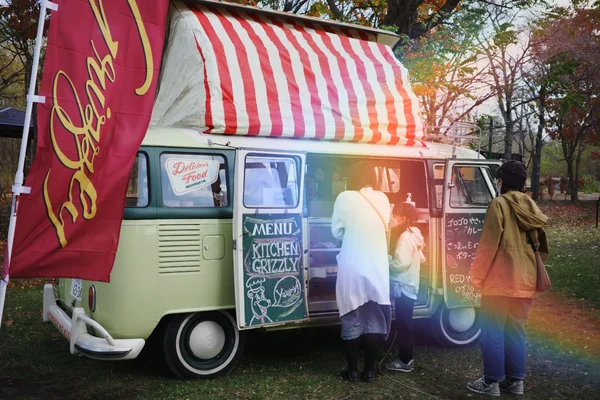

01 / Original: direita
Slit Flare
Um feixe branco, uma cortina vermelha e um reflexo ciano separado.
Módulo não oficial do GRKit · Beta
Deixe entrar um pouco de luz. Adicione aos seus JPEGs os feixes, as manchas de cor e as bordas quentes de uma câmera de filme, direto na RICOH GR III.
Guia de instalação Antes
Antes
 Com Light Leak
Com Light Leak
Os estilos
De um feixe branco estreito a uma névoa colorida. Escolha um estilo, depois ajuste o lado de entrada e a intensidade.
Um feixe branco, uma cortina vermelha e um reflexo ciano separado.

Uma linha brilhante e irregular cercada de luz vermelho-alaranjada.

Uma faixa dourada com contorno vermelho e uma borda fria.

Uma mancha de luz âmbar com um rastro vermelho na diagonal.

Um arco que vai do vermelho e dourado ao verde-azulado e azul.

Uma névoa suave de dourado, verde-azulado, azul e rosa na diagonal.
Os seis exemplos usam a mesma ilustração, intensidade Média, posição Original e Variação 1. Não são capturas da câmera.
Na câmera
Abra Light Leak para escolher um estilo. Use Fn para mudar as configurações.